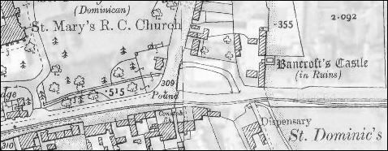
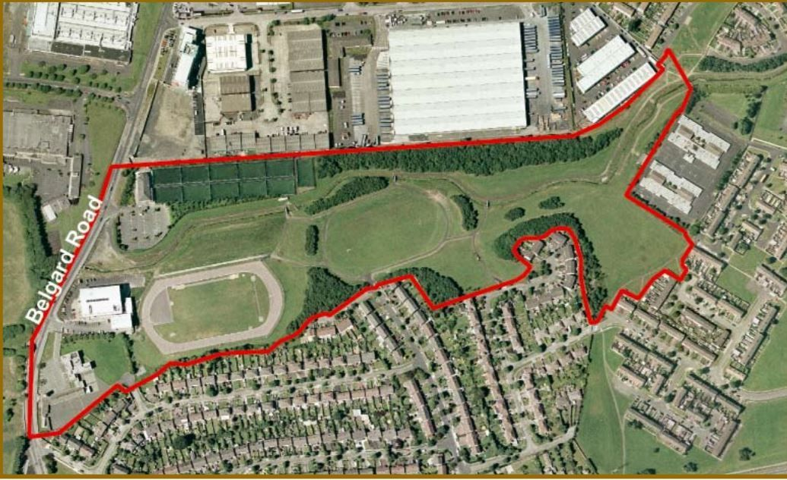

Stop 2 of 16 · Tallaght
Bancroft
The first stretch of the river you can walk beside.
Bancroft Castle
The name Bancroft comes from the castle that once stood at the present junction of Greenhills Road and Tallaght Village.
The castle’s history is uncertain, but its lands formed part of the wider Tymon estate.
Bancroft Park
Bancroft Park, a northern extension of Tymon Park, is the first publicly accessible section of the Poddle. Upstream of here, the channel runs through the grounds of Technological University Dublin.

